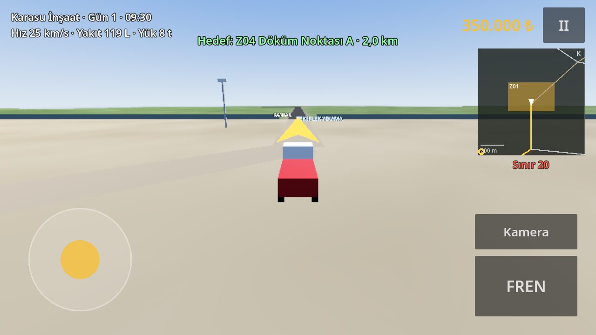

Projeler / Ameleden Mühendisliğe
Ameleden Mühendisliğe
Kurgusal Karasu şehrinde metro hattı inşa ettiğin gerçekçi bir iş makinesi ve şirket yönetimi simülasyonu. Hafriyat kamyonuyla başlıyorsun; kazı, tünel, beton ve ray döşemeyle şantiyeyi büyütüyorsun.

Galeri
Büyütmek için görsele dokunun. Araçlar şimdilik geçici kutu modeller; gerçek modeller sonraki aşamalarda.


Neler var?
Oyun aşama aşama geliştiriliyor. Şu an oynanabilir olanlar:
- Karasu şantiye haritası4 × 4 km harita, ana şantiye, döküm sahası, makine parkı ve 9 km yol ağı.
- Hafriyat taşımaEkskavatörün yanında yüklen, GPS ile döküm sahasına götür, dök, kazan.
- Büyüyen şantiyeKazı çukuru her seferde derinleşiyor, döküm sahası yükseliyor ve kaydediliyor.
- Dozer ve loderANKAR D-6 dozerle yığınları serip tesviye asistanıyla sahayı kotuna getir; NORDVIK L-120 loderle kamyon yükle.
- Ameleden Mühendisliğe kariyeriAmele olarak başla; her iyi işle deneyim kazan, terfi et: Kamyon Şoförü, Operatör, Formen… Mühendis. Şantiye şefi telsizden yol gösterir.
- Gece ve gündüzGün döngüsü, kamyon farları ve şantiye projektörleri.
- Yakıt ve kurtarmaYakıt istasyonu, devrilen aracı doğrultma, kurtarma ekibi.
- Telefona göre ayarTelefonun gücüne göre otomatik grafik ayarı ve performans testi.
Tarayıcı sürümü giriş şifresi ister. Telefon için Android sürümü test aşamasında.